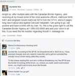
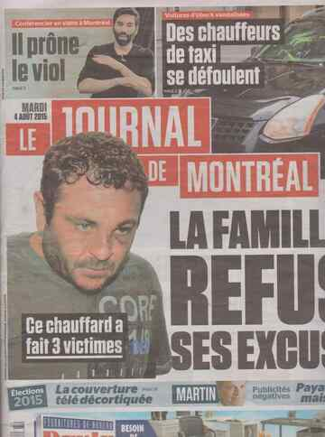
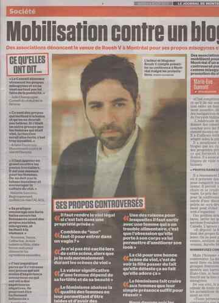

< < < Back
The Canadian Establishment Is Working With Feminists To Shut Down Roosh’s Speeches – Return Of Kings
For the past couple of weeks, Canadian feminists have been on the warpath against Return of Kings publisher Roosh V, who is bringing his “State of Man” lecture to Montreal this Saturday and to Toronto next Saturday. Spearheaded by Vancouver-based feminist Sara Parker-Toulson, feminists are seeking to shut down Roosh’s speeches and possibly bar him from entering the country entirely on the basis that he is encouraging “hate” against women.
The agita against Roosh began three weeks ago, when Parker-Toulson created a Change.org petition to encourage the Canada Border Services Agency to deny Roosh entry to Canada:
From advocating for the decriminalization of rape to imploring men to sexually abuse women with mental illness to straight up dehumanizing women as an entire group, ‘The Return of Kings’ is part of the ‘Manosphere’, a misogynist hate-scene that has been developing a growing presence on the web. Misogynists from all over the world are attracted to Roosh and his website not only because it, like all hate groups, provides an easy scapegoat to blame all of their problems on, but because it also promises to provide them with an easy guide to sexually abusing women. The most dangerous ideas that RooshV propagates are about what to do with women in the real world: how to treat them, why and how they owe men sex, how to best take full advantage of their fundamental inhumanity.
Not long after this, Montreal-based “model” Aurelie Nix organized a protest against Roosh’s speech in she declared that she called the police to ensure that he would be arrested on sight and another feminist encouraged protesters to try and illegally shut down Roosh’s lecture:

Since then, the push to shut down Roosh’s speech has reached critical mass, with both the CBC as well as local Montreal media whipping up a frenzied hate mob against him and Quebecois government officials speaking out. Feminists even managed to threaten the venue location into canceling Roosh’s lecture, although Roosh has found an alternate locale to hold the event.
While it is true that a nation can deny foreign nationals entry for any reason, the feminist campaign against Roosh’s Canadian tour dates has been built on lies and intimidation. Feminists have deliberately lied about and misrepresented Roosh’s views to portray him as a monster, and their violent campaign against him potentially breaks both Canadian and American laws.
How The CBC And CJAD Helped Organize A Lynch Mob
Had the Canadian media ignored Parker-Toulson’s petition and Nix’s lynch mob, no one would have heard of either one. The catalyst for Canadian feminists’ hate campaign against Roosh was an article by CBC News, Canada’s government-owned broadcasting network. The CBC’s report on Roosh amplified feminists’ erroneous claims about Roosh and gave confidence to their campaign against him:
Concordia student Fannie Gadouas is encouraging people to sign the petition to stop his entry into Canada. She said people should know that he is coming to the city and work to prevent it.
The fact that a government-owned broadcaster is deliberately spreading falsehoods in order to cater to social justice warriors should be worrying to Canadian taxpayers.
Additionally, privately-owned Montreal talk radio station CJAD 800 added fuel to the fire with an even more bogus report that erroneously referred to Roosh’s speech as a “pick-up artist workshop,” among other mistakes:
“I started a petition to the border services in order to get him denied entry,” she says. “In the same sense that we fight white supremacy and don’t allow it to flourish in Canada we also take a stance against organized misogyny because it also results in sexual assault and violence against women.”
Since then, numerous Canadian media outlets have repeated Parker-Toulson and Nix’s claims word-for-word, without bothering to investigate the story or reach out to Roosh himself. However, it was the tabloid Le Journal de Montreal that took the next step of actively collaborating with feminists to attempt to shut down Roosh’s speech.
How Le Journal De Montreal Allied With Feminists

In their report on Roosh’s lecture, Le Journal de Montreal published the location where the speech would be held. After a wave of threats from SJWs, the venue was forced to cancel Roosh’s booking. Roosh himself spoke to me on what happened:
They found out the venue location even though I didn’t share it with any of the ticket holders. I believe either the hostess I hired for the event or the hotel staff contacted the private Facebook group. Through that group they organized a protest to show up in front of the hotel (three-hundred people committed to going). The Montreal police (SPVM) found out somehow and contacted the hotel as a safety measure. The hotel freaked out and cancelled my booking. I talked with the hotel and I understand their position, but that left me with no venue to hold an event was taking place in three days. The SJWs involved have the full support of the media. I have no doubt they are working hand in hand to shut the event down.
Yesterday, Roosh was able to find an alternate venue for the speech, and he also made the ticket page private to deter infiltrators. However, the fact that the Canadian media is so willing to do the bidding of violent feminists is incredibly worrying.
What’s Next?

Despite SJWs’ attempts to shut down Roosh’s speech, “The State of Man” will be happening this weekend in Montreal. Stéphanie Vallée, Quebec government minister for women’s issues, has stated that she is not opposed to Roosh giving his speech, but given the successful hate campaign feminists have waged so far, there’s no telling what they will do next. Roosh provided me with this handy visualization of how he plans to enter Canada.
The frenzied response to Roosh’s speech not only displays the authoritarian, Pharisaical nature of feminists, but the parochiality and backwardness of Canadians in general. To date, Roosh has brought his “State of Man” lecture series to four cities in three countries, yet only Canadian feminists are up in arms over his presence.
The creepy collusion that the Canadian media has with feminists—including the CBC, a broadcaster that is funded and run by the federal government itself—shows that Canada is no nation for proud men.
As an American of Canadian descent, I have never been more ashamed of my heritage. Regardless of what happens this weekend in Montreal, it is clear that masculine men should avoid visiting or having anything to do with Canada. It is up to good Canadians to resist the feminist beast in their midst.
Read More: Canadian Aurelie Nix Falsely Accuses Roosh Of A Rape Threat With Help From Journalist Emily Campbell


{kind=link}